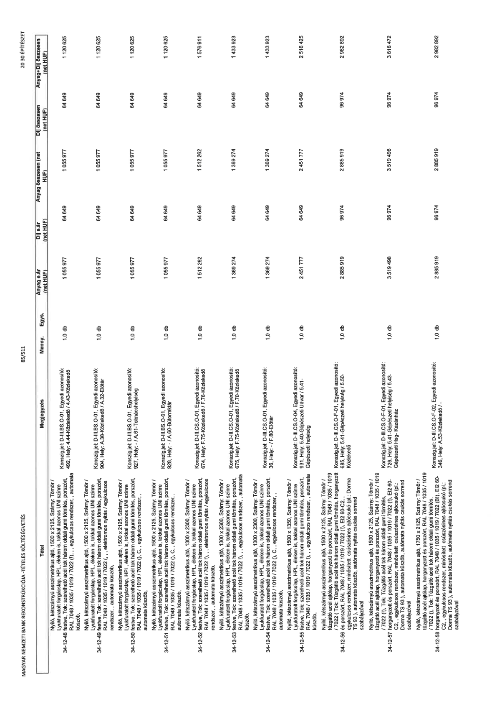

| Tétel | Megjegyzés | Menny. | Egys. | Anyag e.ár (net HUF) | Díj e.ár (net HUF) | Anyag összesen (net HUF) | Díj összesen (net HUF) | Anyag+Díj összesen (net HUF) |
|---|---|---|---|---|---|---|---|---|
| 34-12-48 | Nyíló, kétszárnyú asszimetrikus ajtó, 1500 x 2125, Szárny: Tömör / Lyukfuratolt forgácslap, HPL éleken is, tokkal azonos UNI színre festve, Tok: szerelhető acél tok három oldali gumi tömítés, porszórt, RAL 7048 / 1035 / 1019 / 7022 (I),,, egykulcsos rendszer,, automata küszöb,; Konszign.jel: D-III.BS.O-01, Egyedi azonosító: 492, Hely: 4.44-Közlekedő / 4.43-Közlekedő | 1,0 | db | 1 055 977 | 64 649 | 1 055 977 | 64 649 | 1 120 626 |
| 34-12-49 | Nyíló, kétszárnyú asszimetrikus ajtó, 1500 x 2125, Szárny: Tömör / Lyukfuratolt forgácslap, HPL éleken is, tokkal azonos UNI színre festve, Tok: szerelhető acél tok három oldali gumi tömítés, porszórt, RAL 7048 / 1035 / 1019 / 7022 (I),,, elektromos nyitás / egykulcsos rendszer,, automata küszöb,; Konszign.jel: D-III.BS.O-01, Egyedi azonosító: 904, Hely: A.38-Közlekedő / A.32-Előtér | 1,0 | db | 1 055 977 | 64 649 | 1 055 977 | 64 649 | 1 120 626 |
| 34-12-50 | Nyíló, kétszárnyú asszimetrikus ajtó, 1500 x 2125, Szárny: Tömör / Lyukfuratolt forgácslap, HPL éleken is, tokkal azonos UNI színre festve, Tok: szerelhető acél tok három oldali gumi tömítés, porszórt, RAL 7048 / 1035 / 1019 / 7022 (),,, egykulcsos rendszer,, automata küszöb,; Konszign.jel: D-III.BS.O-01, Egyedi azonosító: 927, Hely: / A.61-Tolmacshelyiség | 1,0 | db | 1 055 977 | 64 649 | 1 055 977 | 64 649 | 1 120 626 |
| 34-12-51 | Nyíló, kétszárnyú asszimetrikus ajtó, 1500 x 2125, Szárny: Tömör / Lyukfuratolt forgácslap, HPL éleken is, tokkal azonos UNI színre festve, Tok: szerelhető acél tok három oldali gumi tömítés, porszórt, RAL 7048 / 1035 / 1019 / 7022 (),,, egykulcsos rendszer,, automata küszöb,; Konszign.jel: D-III.BS.O-01, Egyedi azonosító: 928, Hely: / A.60-Bútorraktár | 1,0 | db | 1 055 977 | 64 649 | 1 055 977 | 64 649 | 1 120 626 |
| 34-12-52 | Nyíló, kétszárnyú asszimetrikus ajtó, 1300 x 2300, Szárny: Tömör / Lyukfuratolt forgácslap, HPL éleken is, tokkal azonos UNI színre festve, Tok: szerelhető acél tok három oldali gumi tömítés, porszórt, RAL 7048 / 1035 / 1019 / 7022 (),,, elektromos nyitás / egykulcsos rendszer,, automata küszöb,; Konszign.jel: D-III.CS.O-01, Egyedi azonosító: 674, Hely: F.75-Közlekedő / F.76-Közlekedő | 1,0 | db | 1 512 262 | 64 649 | 1 512 262 | 64 649 | 1 576 911 |
| 34-12-53 | Nyíló, kétszárnyú asszimetrikus ajtó, 1300 x 2300, Szárny: Tömör / Lyukfuratolt forgácslap, HPL éleken is, tokkal azonos UNI színre festve, Tok: szerelhető acél tok három oldali gumi tömítés, porszórt, RAL 7048 / 1035 / 1019 / 7022 (),,, egykulcsos rendszer,, automata küszöb,; Konszign.jel: D-III.CS.O-01, Egyedi azonosító: 675, Hely: F.75-Közlekedő / F.70-Közlekedő | 1,0 | db | 1 369 274 | 64 649 | 1 369 274 | 64 649 | 1 433 923 |
| 34-12-54 | Nyíló, kétszárnyú asszimetrikus ajtó, 1300 x 2300, Szárny: Tömör / Lyukfuratolt forgácslap, HPL éleken is, tokkal azonos UNI színre festve, Tok: szerelhető acél tok három oldali gumi tömítés, porszórt, RAL 7048 / 1035 / 1019 / 7022 (),,, egykulcsos rendszer,, automata küszöb,; Konszign.jel: D-III.CS.O-01, Egyedi azonosító: 36, Hely: / F.80-Előtér | 1,0 | db | 1 369 274 | 64 649 | 1 369 274 | 64 649 | 1 433 923 |
| 34-12-55 | Nyíló, kétszárnyú asszimetrikus ajtó, 1500 x 1350, Szárny: Tömör / Lyukfuratolt forgácslap, HPL éleken is, tokkal azonos UNI színre festve, Tok: szerelhető acél tok három oldali gumi tömítés, porszórt, RAL 7048 / 1035 / 1019 / 7022 (),,, egykulcsos rendszer,, automata küszöb,; Konszign.jel: D-III.CS.O-04, Egyedi azonosító: 931, Hely: 5.40-Gépészeti Udvar / 5.41-Gépészeti helyiség | 1,0 | db | 2 451 777 | 64 649 | 2 451 777 | 64 649 | 2 516 426 |
| 34-12-56 | Nyíló, kétszárnyú asszimetrikus ajtó, 1500 x 2125, Szárny: Tömör / tűzgátló acél ajtólap, horganyzott és porszórt, RAL 7048 / 1035 / 1019 / 7022 (Tok: Tűzgátló acél tok három oldali gumi tömítés, horganyzott és porszórt, RAL 7048 / 1035 / 1019 / 7022 (I), EI2 60-C2,, egykulcsos rendszer, minősített csúszósínes ajtócsukó (pl.: Dorma TS 93), automata nyitás csukás sorrend szabályzóval; Konszign.jel: D-III.CS.O-F-01, Egyedi azonosító: 931, Hely: 5.41-Gépészeti helyiség / 5.50-Közlekedő | 1,0 | db | 2 885 919 | 96 974 | 2 885 919 | 96 974 | 2 982 893 |
| 34-12-57 | Nyíló, kétszárnyú asszimetrikus ajtó, 1500 x 2125, Szárny: Tömör / tűzgátló acél ajtólap, horganyzott és porszórt, RAL 7048 / 1035 / 1019 / 7022 (I), Tok: Tűzgátló acél tok három oldali gumi tömítés, horganyzott és porszórt, RAL 7048 / 1035 / 1019 / 7022 (I), EI2 60-C2,, egykulcsos rendszer, minősített csúszósínes ajtócsukó (pl.: Dorma TS 93), automata nyitás csukás sorrend szabályzóval; Konszign.jel: D-III.CS.O-F-01, Egyedi azonosító: 685, Hely: 5.41-Gépészeti helyiség / 5.43-Közlekedő | 1,0 | db | 3 519 498 | 96 974 | 3 519 498 | 96 974 | 3 616 472 |
| 34-12-58 | Nyíló, kétszárnyú asszimetrikus ajtó, 1750 x 2125, Szárny: Tömör / tűzgátló acél ajtólap, horganyzott és porszórt, RAL 7048 / 1035 / 1019 / 7022 (), Tok: Tűzgátló acél tok három oldali gumi tömítés, horganyzott és porszórt, RAL 7048 / 1035 / 1019 / 7022 (EI), EI2 60-C2,, egykulcsos rendszer, minősített csúszósínes ajtócsukó (pl.: Dorma TS 93), automata nyitás csukás sorrend szabályzóval; Konszign.jel: D-III.CS.O-F-01, Egyedi azonosító: 726, Hely: 5.41-Gépészeti helyiség / 5.43-Gépészeti Hsg- Kazánház | 1,0 | db | 2 885 919 | 96 974 | 2 885 919 | 96 974 | 2 982 892 |
| 34-12-59 | Nyíló, kétszárnyú asszimetrikus ajtó, 1750 x 2125, Szárny: Tömör / tűzgátló acél ajtólap, horganyzott és porszórt, RAL 7048 / 1035 / 1019 / 7022 (), Tok: Tűzgátló acél tok három oldali gumi tömítés, horganyzott és porszórt, RAL 7048 / 1035 / 1019 / 7022 (BÉÉP: I), EI2 60-C2,, egykulcsos rendszer, minősített csúszósínes ajtócsukó (pl.: Dorma TS 93), automata nyitás csukás sorrend szabályzóval; Konszign.jel: D-III.CS.O-F-02, Egyedi azonosító: 346, Hely: A.53-Közlekedő / - | 1,0 | db | 2 885 919 | 96 974 | 2 885 919 | 96 974 | 2 982 892 |
